Creating Tracking Pages
REACT's Create Tracking Page feature enables you to build branded shipment tracking pages in minutes, with no coding required. This page explains how REACT tracking pages work, how to set up new pages, and how to manage your existing pages.
What Is A Tracking Page?
A REACT tracking page is a customisable microsite, hosted by Sorted, that displays status and event information about an individual shipment or group of shipments. Your customers can track their order simply by visiting the link that corresponds to their shipment.
All REACT tracking pages display a grid of page elements, such as tracking information, text, or graphics. The Create Tracking Page editor enables you to create and position these elements, as well as specifying design choices such as colours and fonts.
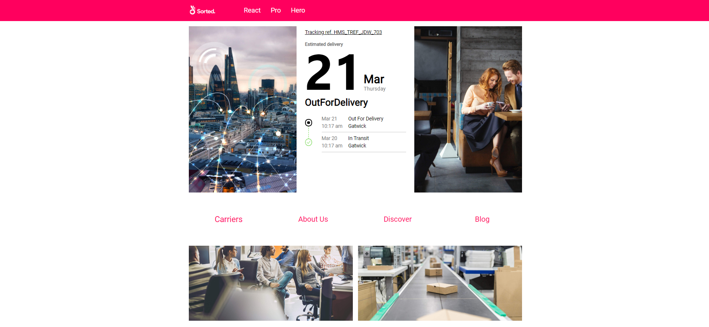
You can create as many tracking page layouts as you need. For example, a shoe retailer could use different custom layouts to track men's, women's, and kid's shoes. You can also use the Create Tracking Page editor to create custom "shipment not found" pages to display if a customer tries to track a shipment using invalid details.
Note
This page explains how to set up tracking pages using REACT's Create Tracking Page UI option. It does not cover integrating your own websites or apps with REACT's tracking API. For information on using REACT to power tracking within your own websites or apps, see the Retrieving Shipment and Event Data page.
Creating New Tracking Pages
To create a new page layout, select Settings > Tracking Pages and select the Create New Tracking Page tile to display the Create Tracking Page menu.
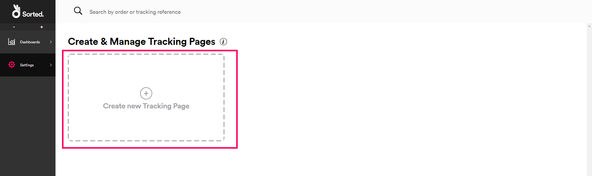
The Create Tracking Page menu has seven sections:
- Link - Displays sharable tracking links to your page.
- General - Configure general details about your page, including default titles, colours and fonts.
- Nav Bar - Customise the look and feel of your page's nav bar.
- Nav Items - Configure the links that will appear on your page's nav bar.
- Desktop Layout - Select the elements you want your tracking page to display when viewed on a desktop computer, and specify where these elements should be placed.
- Mobile Layout - Select the elements you want your tracking page to display when viewed on a mobile device.
- Page Overrides - If required, select an alternative tracking page (i.e. a custom "shipment not found" page) to display in the event that a customer searches for a shipment using invalid details.
To see what your page would look like while you're configuring it, click Preview at the top of the page.
To save your page before publishing, click Save. Bear in mind that you can't change the Title of your page once it's been saved.
To publish your page, click Publish. Publishing your page makes it accessible to customers.
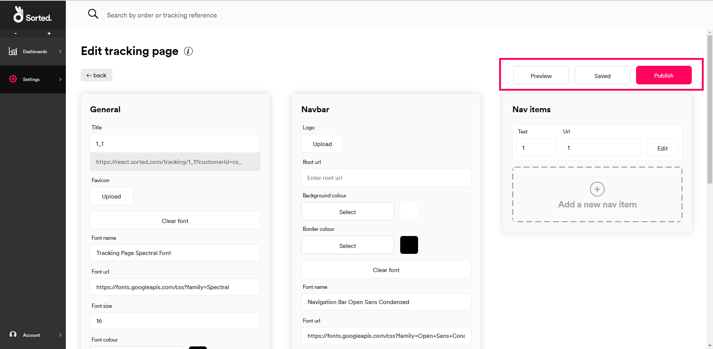
Configuring General Page Details
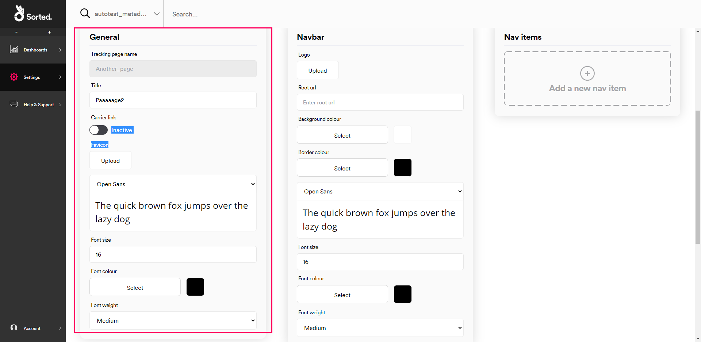
To configure general page details:
- Enter a Tracking Page Name for the layout. This value is used as part of the page's link.
Note
Choose your page's Tracking Page Name carefully, as you can't update it once you've saved the page. Note that you can't have two pages with the same Tracking Page Name.
For more information on how your customers can access tracking pages once they are published, see the Publishing Your Page section.
- Enter a Title for your page. This value is displayed on the page's browser tab, and is also used as the title of the page's tile on the Create & Manage Tracking Pages menu.
- Select whether you want the Carrier Link to be Active or Inactive. All REACT tracking pages include a carrier tracking reference. If you set the Carrier Link to Active, then clicking on this reference takes customers to the relevant carrier tracking portal.
- Select a Favicon by clicking the Upload button and selecting an image from the dialog box. There is no size limit on this individual image, but your page cannot exceed more than 5MB of images in total.
- Select the default font that REACT should use on the page.
- Specify a default Font Size.
- Select a Font Colour by clicking the Select button and choosing a colour from the picker.
- Select a default Font Weight.
Configuring the Nav Bar
All REACT tracking pages have a nav bar at the top. The nav bar contains links to locations of your choice. For example, a clothing retailer might create links from their tracking page to the men's, women's, and kid's sections of their online store.
Configuring Nav Bar Appearance
To configure the appearance of your page's nav bar, use the Navbar panel:
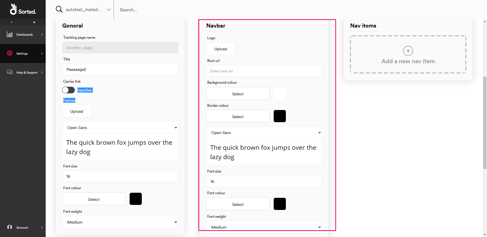
- Select a Logo by clicking the Upload button and selecting an image from the dialog box. There is no size limit on this individual image, but your page cannot exceed more than 5MB of images in total. The logo is automatically resized to fit the nav bar, and is displayed on the top-left of the page.
- Enter a web link into the Root URL field. Users are redirected to this link when they click the page's logo.
- Select a Background Colour by clicking the Select button and choosing a colour from the picker. This is the colour of the nav bar itself.
- Select a Border Colour by clicking the Select button and choosing a colour from the picker. This is the colour of the border at the bottom of the nav bar.
- Select the font that REACT should use on the nav bar.
- Select a Font Colour by clicking the Select button and choosing a colour from the picker. This is the colour of the nav bar's text.
- Select a Font Size and Font Weight for the nav bar's text.
Note
The font options on the Navbar panel override any page-wide options you may have selected in the General panel.
Configuring Nav Bar Links
To add items to your page's nav bar, use the Nav Items panel:
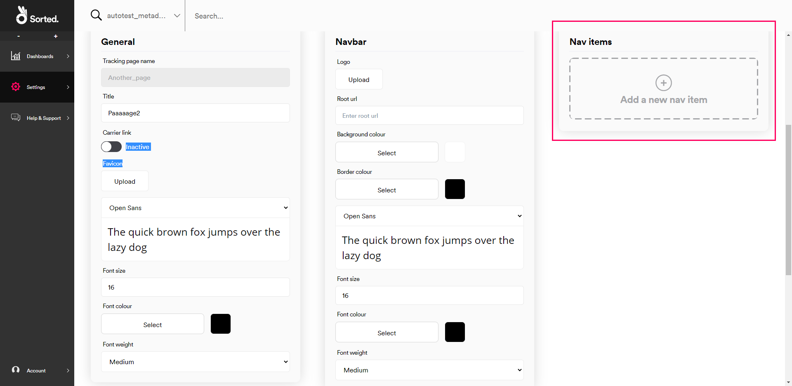
- Click the Add a new nav item tile. REACT displays the Add Link dialog.
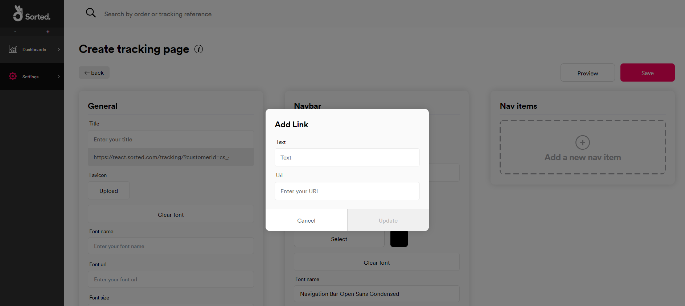
- Enter the Text that you want the item to display.
- Enter the URL that you want the item to link to.
- Click the Update button to close the dialog and add the nav link.
To rearrange an existing nav bar item, click Edit and select Move Up or Move Down as required. Moving an item up the list moves it to the left on the displayed tracking page, and vice versa.
To delete an existing nav bar item, click Edit and select Delete.
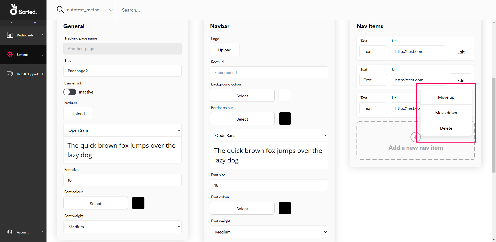
Configuring Page Layout
REACT tracking pages offer separate, fully responsive layouts for desktop and mobile. You can configure these layouts via the Desktop and Mobile panels.
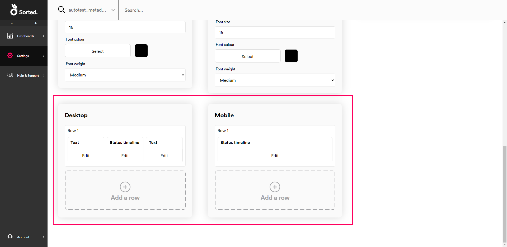
Tracking pages are laid out on a grid system, with each layout having up to six rows, and each row having up to four columns on desktop, and a single column on mobile. Each column can contain a single page element (such as tracking widgets, text or images).
As an example, the following graphic shows a desktop page made up of the following elements:
- A large-height top row containing three columns, with two images and the tracking widget itself.
- A small-height middle row containing four columns, all of which contain text links.
- A medium-height bottom row containing two columns, with both containing images.
Editing Rows
To add new rows:
- Click the Add a row tile on either the Desktop or Mobile panel to display the Add Row dialog.
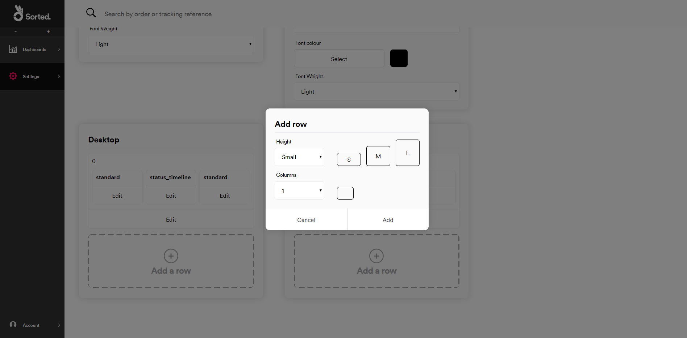
- Select the row Height required.
- If you are setting up a row in the desktop layout, select the number of Columns the row should have. This option is not available for mobile layouts, as all mobile rows have one column.
- Click Add to close the dialog and add the new row.
To delete an existing row, click the row's Edit button and then click Delete.
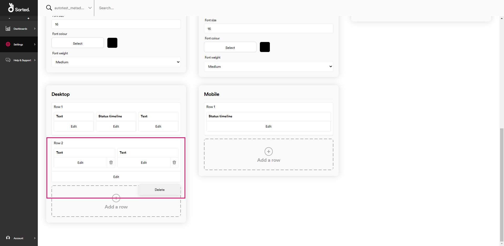
Configuring Page Elements
REACT supports the following page element types:
- Status_timeline - A tracking widget displaying the shipment's current status, estimated delivery date and a timeline of tracking events. If no tracking information is available, REACT displays a blank widget.
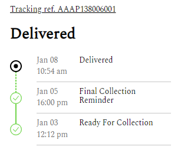
- Text + Image - Displays an image with accompanying overlay text.
- Text - Text only.
- Image - An image with no text.
To configure row elements, click Edit on the element you want to configure to display the Edit Column dialog.
Next, select the Type of element you want to add. The fields required differ depending on element type.
Status Timeline
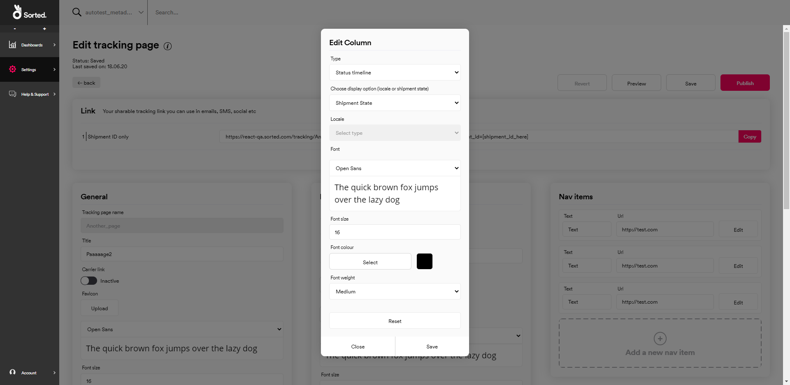
To configure a Status Timeline element:
- Select Status Timeline from the Type menu.
- Select whether you want to view Locale labels or Shipment State labels from the Choose Display Type menu. If you select Locale labels, then the page will display your custom shipment state labels instead of state names. If you select Shipment State labels, then the page will display default state names.
Note
For more information on configuring custom shipment labels, see the Setting up Custom State Labels section of the Settings page.
- If you selected Locale in the previous step, select which locale you want to use for the page's labels from the Locale menu.
- Select the font that REACT should use on the element.
- Select a Font Colour by clicking the Select button and choosing a colour from the picker.
- Select a Font Size and Font Weight for the element's text.
Note
You can only add Status Timeline elements to the top row of your tracking page. The option is not displayed when editing elements on lower rows.
Image + Text
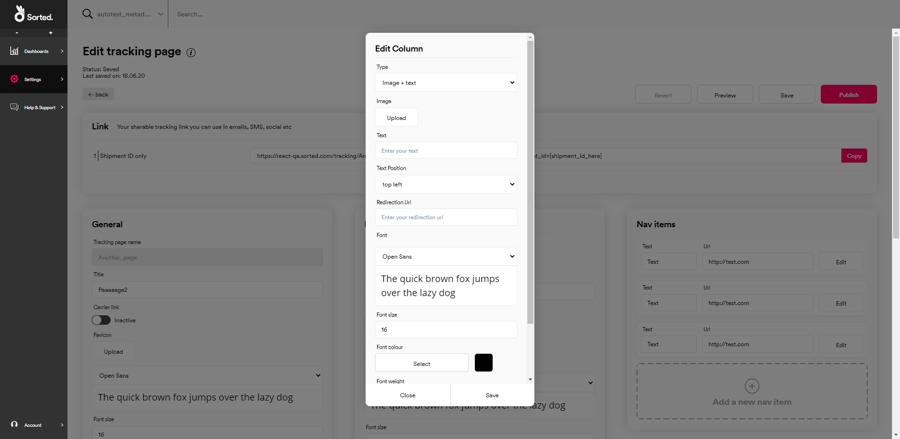
To configure an Image + Text element:
- Select Image + Text from the Type menu.
- Select an Image by clicking the Upload button and selecting an image from the dialog box. There is no size limit on this individual image, but your page cannot exceed more than 5MB of images in total.
- Enter the Text you want the element to display.
- Select a Text Position. This is the position in which the text will be displayed within the element, enabling you to avoid having key parts of your image obscured by text.
- If required, enter a Redirection URL. Users are redirected to this link when they click the element.
- Select the font that REACT should use on the element.
- Select a Font Colour by clicking the Select button and choosing a colour from the picker.
- Select a Font Size and Font Weight for the element's text.
Text
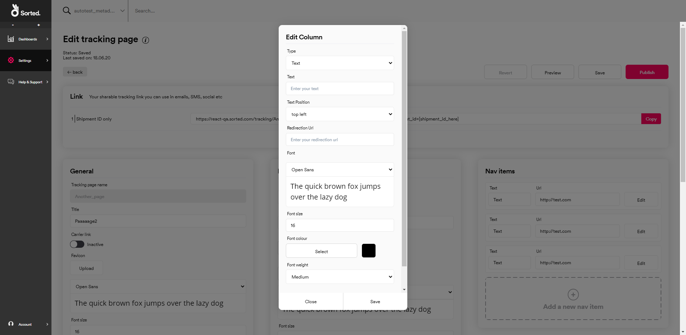
To configure a Text element:
- Select Text from the Type menu.
- Enter the Text you want the element to display.
- Select a Text Position. This is the position in which the text will be displayed within the element.
- Enter a Redirection URL. Users are redirected to this link when they click the element.
- Select the font that REACT should use on the element.
- Select a Font Colour by clicking the Select button and choosing a colour from the picker.
- Select a Font Size and Font Weight for the element's text.
Image
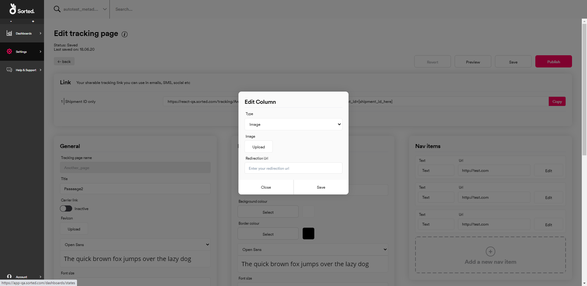
To configure an Image element:
- Select Image from the Type menu.
- Select an Image by clicking the Upload button and selecting an image from the dialog box. There is no size limit on this individual image, but your page cannot exceed more than 5MB of images in total.
- Enter a Redirection URL. Users are redirected to this link when they click the element.
Lastly, click Save to close the dialog and save the element's details.
To edit an exiting element, click its Edit button to display the Edit Column dialog.
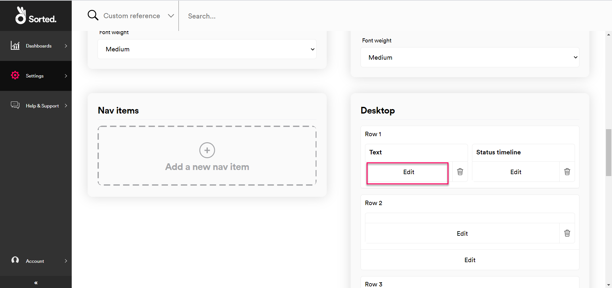
To delete an existing element, click its trash icon and then click Yes on the confirmation dialog.
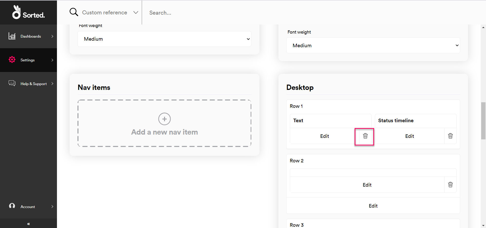
Configuring Custom Shipment Not Found Pages
The Page Overrides panel enables you to select a tracking page for REACT to display in the event that a customer searches for a shipment using invalid details (for example by providing a shipment_id that does not match any registered shipments).
Note
REACT only displays the selected override page in circumstances where a user has attempted to track a shipment using a valid REACT tracking page name but invalid shipment details. If the user enters an invalid tracking page name, then REACT always displays a generic 404 page.
See the Linking to Individual Shipments page for a breakdown of the link structure of REACT tracking pages.
Use the Invalid Tracking Ref page override drop-down to select the page you want REACT to display when a shipment cannot be found. This drop-down displays a list of all your available tracking pages.
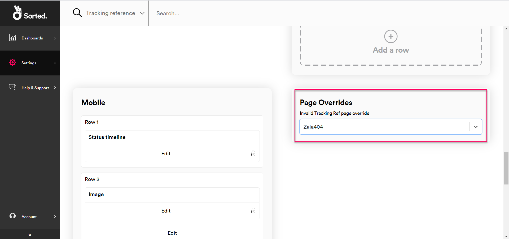
Note that, as you can create multiple tracking pages, you can use the Create Tracking Page editor to create a purpose-built "shipment not found" page. For example, you could create a page with text elements containing "what to do next" information or contact details, and then select that page as the override for all your other tracking pages.
If you select a page with a tracking widget, then REACT displays that page with a "no events available" notice should a customer search for a shipment that can't be found, as shown in the below example:
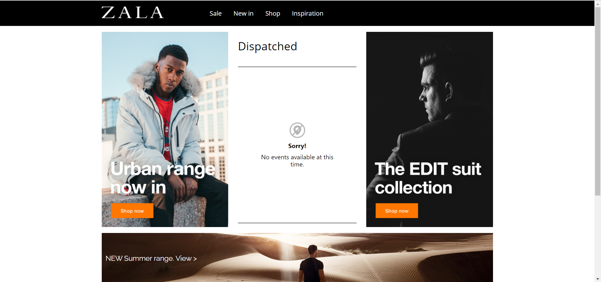
By default, the Invalid Tracking Ref page override drop-down is set to None. If you do not select a tracking page, then REACT displays a generic 404 page when a customer searches for a shipment that can't be found.
Publishing Your Page
Once you're happy with your page, click Publish to publish it.
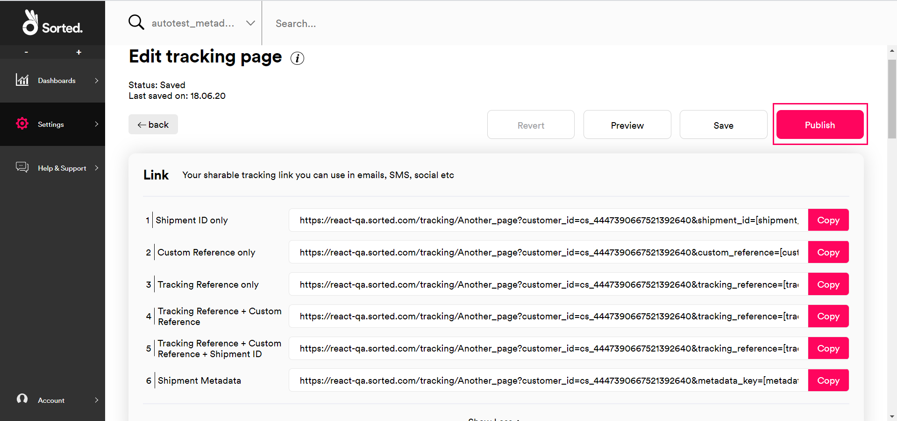
You can now share the link to the page with your customers. The Link panel displays sharable links to your page, using various combinations of shipment properties to identify the shipment or shipment group to be tracked.
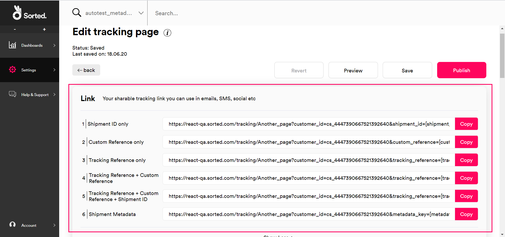
Linking to Individual Shipments
Links to individual pages take the format https://react.sorted.com/tracking/[page_Title]?customer_Id=[customer_Id]&shipment_Id=[shipment_Id]&tracking_reference=[tracking_reference]&custom_reference=[custom_reference], where page_Title is the title of your tracking page and customer_Id is your REACT customer ID.
There are three search parameters you can use when passing links to your consumer so that they can identify an individual shipment; shipment_Id, tracking_reference and custom_reference.
REACT uses the following logic when identifying shipments to be tracked:
- If you specify a
shipment_Idthen REACT uses that value alone to identify the shipment, as the REACT Shipment ID is a unique identifier for every shipment registered with REACT. - If you specify a
tracking_reference,custom_reference, or both, then REACT searches for all shipments with those details created in the last month and displays details for the first shipment found. - If no parameters are provided, the REACT returns an error.
As an example, suppose that a retailer with a customer_Id of cs_1234567890 creates a page with a page_Title of awesomepage. That retailer then registers a shipment with the following details:
shipment_Idof sp_0987654321tracking_referenceof demo_tracking_refcustom_referenceof demo_custom_ref
In order for that shipment's consumer to track the page, the retailer passes the following link to the consumer:
https://react.sorted.com/tracking/awesomepage?customer_Id=cs_1234567890&shipment_Id=sp_0987654321
However, if the retailer did not have the REACT shipment ID of that shipment to hand, they could also pass the below link to the consumer:
https://react.sorted.com/tracking/awesomepage?customer_Id=cs_1234567890&tracking_reference=demo_tracking_ref&custom_reference=demo_custom_ref
In this example, both of these links would point to the same shipment.
Linking to Shipment Groups
REACT shipment groups are collections of shipments that share a common metadata property. Grouped shipments can be tracked from the same tracking page, with a drop-down picker on the tracking widget enabling the customer to select which shipment's tracking information they want to view. This is useful in circumstances where an order would take more than one shipment to fulfil, for example.

Tracking page links to shipment groups take the format https://react.sorted.com/tracking/[page_title]?customer_id=[customer_id_here]&metadata_key=[metadata_key_here]&metadata_value=[metadata_value_here], where [page_title] is the title of your tracking page, [customer_id_here] is your REACT customer ID, and the metadata key and value are the properties that the shipments share.
As an example, suppose that a customer with a customer_id of cs_1234567890 creates a tracking page called examplePage. The customer then registers two shipments from the same order, grouping them together using a metadata key of order_ref with a value of 1234. To enable their customer to track both shipments on the order from the same page, they would share the following link:
https://react.sorted.com/tracking/examplePage?customer_id=cs_1234567890&metadata_key=order_ref&metadata_value=1234
Note that REACT only displays the drop-down shipment picker and grouping information if you access the shipment via the shipment group link (that is, you use the shared metadata key and value to identify the shipments to be displayed). You can still use other valid tracking page link formats to view a shipment that is in a group, but REACT does not display links to other shipments in the group in this case.
Note
For more information on grouping REACT shipments, see the Grouping Shipments page.
Managing Existing Pages
To edit an existing page, select Settings > Tracking Pages to display the Create & Manage Tracking Pages menu, and click the View button on the page's tile. The process of editing an existing page is the same as that used to set up a new page.
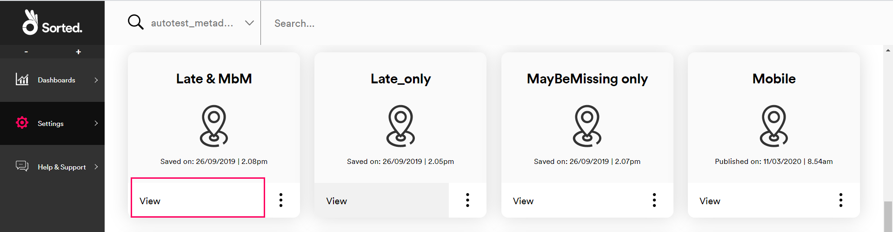
To preview an existing page, click the context menu on the page's tile and select Preview from the drop-down menu.
To duplicate an existing page, click the context menu on the page's tile and select Duplicate from the drop-down menu.
To delete an existing page, click the context menu on the page's tile and select Delete from the drop-down menu.
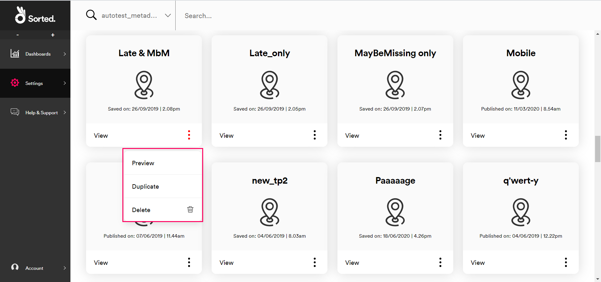
User Access
Admin and Marketing users can view, edit and delete tracking pages. Dashboard users do not have access to this feature.
Next Steps
Learn more about the REACT UI: